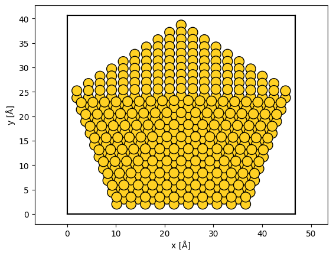

Contents
import abtem
import dask
import matplotlib.pyplot as plt
import numpy as np
from ase.build import bulk
from ase.cluster import Decahedron
from dask.distributed import Client
import time
import dask
from dask import delayed
abtem.config.set({"device": "gpu"})
abtem.config.set({"fft": "mkl"})
abtem.config.set({"mkl.threads": 1})
dask.config.set({"distributed.scheduler.worker-saturation": 1.0})
<dask.config.set at 0x217eb24af20>
client = Client(n_workers=1, threads_per_worker=1)
client
Client
Client-49b93aa2-7402-11ed-9134-3800259eb785
| Connection method: Cluster object | Cluster type: distributed.LocalCluster |
| Dashboard: http://127.0.0.1:8787/status |
Cluster Info
LocalCluster
215f27b6
| Dashboard: http://127.0.0.1:8787/status | Workers: 1 |
| Total threads: 1 | Total memory: 31.93 GiB |
| Status: running | Using processes: True |
Scheduler Info
Scheduler
Scheduler-95bc37ad-8373-4abe-b53e-f858506957a4
| Comm: tcp://127.0.0.1:60725 | Workers: 1 |
| Dashboard: http://127.0.0.1:8787/status | Total threads: 1 |
| Started: Just now | Total memory: 31.93 GiB |
Workers
Worker: 0
| Comm: tcp://127.0.0.1:60737 | Total threads: 1 |
| Dashboard: http://127.0.0.1:60738/status | Memory: 31.93 GiB |
| Nanny: tcp://127.0.0.1:60728 | |
| Local directory: C:\Users\jacob\AppData\Local\Temp\dask-worker-space\worker-bljr8nrl | |
atoms = Decahedron("Au", 10, 2, 0)
atoms.rotate("x", -30)
atoms.center(vacuum=2)
abtem.show_atoms(atoms);

from ase import Atoms
import numpy as np
def import_prismatic_xyz(filename):
with open(filename) as f:
lines = f.readlines()
cell = list(map(float, lines[1].split()))
positions = []
numbers = []
for line in lines[2:-1]:
line = line.split()
numbers.append(int(line[0]))
positions.append(list(map(float, line[1:4])))
return Atoms(positions=np.array(positions), numbers=numbers, cell=cell)
def export_prismatic_xyz(filename, atoms):
with open(filename, 'w') as f:
f.write('test \n')
f.write(' {} {} {} \n'.format(*np.diag(atoms.cell)))
for number, position in zip(atoms.numbers, atoms.positions):
f.write('{} {} {} {} {} {} \n'.format(number, *position, 1, 0.00))
f.write('-1 \n')
export_prismatic_xyz("test.xyz", atoms)
import h5py
f = h5py.File('prismatic_output.h5', 'r')
for key, value in f["4DSTEM_simulation"]["data"].items():
print(value)
<HDF5 group "/4DSTEM_simulation/data/counted_datacubes" (0 members)>
<HDF5 group "/4DSTEM_simulation/data/datacubes" (0 members)>
<HDF5 group "/4DSTEM_simulation/data/diffractionslices" (0 members)>
<HDF5 group "/4DSTEM_simulation/data/pointlistarrays" (0 members)>
<HDF5 group "/4DSTEM_simulation/data/pointlists" (0 members)>
<HDF5 group "/4DSTEM_simulation/data/realslices" (1 members)>
<HDF5 group "/4DSTEM_simulation/data/supergroups" (0 members)>
f.close()
data[0,0].sum()
---------------------------------------------------------------------------
NameError Traceback (most recent call last)
Cell In [13], line 1
----> 1 data[0,0].sum()
NameError: name 'data' is not defined
measurement.array[0,0].sum()
---------------------------------------------------------------------------
NameError Traceback (most recent call last)
Cell In [14], line 1
----> 1 measurement.array[0,0].sum()
NameError: name 'measurement' is not defined
data = f["4DSTEM_simulation"]["data"]["realslices"]["virtual_detector_depth0000"]["data"][:]
prismatic = data[:,:,50:150].sum(-1)
abtem_image = measurement.array[:,:,50:150,0].sum(-1)
prismatic = prismatic / prismatic.max()
abtem_image = abtem_image / abtem_image.max()
plt.imshow(prismatic - abtem_image)
plt.colorbar()
<matplotlib.colorbar.Colorbar at 0x217f57e1db0>
plt.imshow(abtem_image)
plt.colorbar()
<matplotlib.colorbar.Colorbar at 0x217f5569d50>
plt.imshow(prismatic)
plt.colorbar()
<matplotlib.colorbar.Colorbar at 0x217f5721600>
plt.plot(data[0,0])
plt.plot(measurement.array[0,0])
plt.xlim([0,50])
(0.0, 50.0)
2022-12-05 07:29:54,122 - distributed.scheduler - WARNING - Worker failed to heartbeat within 300 seconds. Closing: <WorkerState 'tcp://127.0.0.1:60737', name: 0, status: running, memory: 0, processing: 0>
2022-12-05 07:29:54,359 - distributed.scheduler - WARNING - Received heartbeat from unregistered worker 'tcp://127.0.0.1:60737'.
2022-12-05 07:30:12,645 - distributed.nanny - WARNING - Worker process still alive after 3.199996795654297 seconds, killing
2022-12-05 07:30:13,401 - distributed.nanny - ERROR - Error in Nanny killing Worker subprocess
Traceback (most recent call last):
File "C:\Users\jacob\anaconda3\envs\abtem-dask\lib\asyncio\tasks.py", line 456, in wait_for
return fut.result()
asyncio.exceptions.CancelledError
The above exception was the direct cause of the following exception:
Traceback (most recent call last):
File "C:\Users\jacob\anaconda3\envs\abtem-dask\lib\site-packages\distributed\nanny.py", line 603, in close
await self.kill(timeout=timeout, reason=reason)
File "C:\Users\jacob\anaconda3\envs\abtem-dask\lib\site-packages\distributed\nanny.py", line 388, in kill
await self.process.kill(reason=reason, timeout=0.8 * (deadline - time()))
File "C:\Users\jacob\anaconda3\envs\abtem-dask\lib\site-packages\distributed\nanny.py", line 835, in kill
await process.join(max(0, deadline - time()))
File "C:\Users\jacob\anaconda3\envs\abtem-dask\lib\site-packages\distributed\process.py", line 316, in join
await asyncio.wait_for(asyncio.shield(self._exit_future), timeout)
File "C:\Users\jacob\anaconda3\envs\abtem-dask\lib\asyncio\tasks.py", line 458, in wait_for
raise exceptions.TimeoutError() from exc
asyncio.exceptions.TimeoutError
prismatic.shape
(234, 204)
frozen_phonons = abtem.FrozenPhonons(atoms, 1, {"C": 0.0, "Au": 0.}, ensemble_mean=True)
reverse = atoms.copy()
reverse.positions[:,2] = reverse.cell[2,2] - reverse.positions[:,2]
potential = abtem.Potential(
reverse,
gpts=(1200,1200),
projection="finite",
slice_thickness=.5,
)
s_matrix = abtem.SMatrix(
potential=potential,
energy=200e3,
planewave_cutoff=23,
interpolation=4,
store_on_host=True,
downsample=False,
)
#s_matrix = s_matrix.build()
scan = abtem.GridScan(start=(0,0), sampling=(.1,.1), end=(.1*234, .1*204), endpoint=False)
#scan.match_probe(s_matrix)
#detector = abtem.AnnularDetector(inner=50, outer=80, to_cpu=False)
detector = abtem.FlexibleAnnularDetector()
#s_matrix.build().array
ctf = abtem.CTF(semiangle_cutoff=21, taper=1, energy=s_matrix.energy)
measurement = s_matrix.scan(scan=scan, detectors=detector, ctf=ctf)
#s_matrix.build()._validate_max_batch_reduction(scan)
#np.prod(measurement.array.shape[:2])
(0, 116, 117, 1, 0, 0) 234 234
scan.gpts
(234, 204)
#scan.get_positions()
%%time
measurement.compute()
CPU times: total: 469 ms
Wall time: 55.4 s
<abtem.measurements.PolarMeasurements object at 0x00000217F8E54AC0>
# 512: 68 s, 120 s, 32, 4
# 1024: 206 s, 240 s, 32, 4
# 2048: 101 s, 540 s, 4, 4
# 4096: 65 s, , 1, 4
measurement.show()
(<Figure size 640x480 with 2 Axes>, <Axes: xlabel='x [Å]', ylabel='y [Å]'>)
measurement.show()
(<Figure size 640x480 with 2 Axes>, <Axes: xlabel='x [Å]', ylabel='y [Å]'>)
measurements = s_matrix.build()
measurements.compute(progress_bar=False)
#measurements.diffraction_patterns().sum()
<abtem.prism.s_matrix.SMatrixArray object at 0x000001A0C535C190>
measurements.show()
(<Figure size 640x480 with 2 Axes>, <Axes: xlabel='x [Å]', ylabel='y [Å]'>)
s_matrix = abtem.SMatrix(
potential=None,
extent=10,
gpts=401,
energy=200e3,
planewave_cutoff=20,
interpolation=4,
store_on_host=False,
downsample=True,
)
blocks.show()
[#### ] | 10% Completed | 107.34 ms
C:\Users\jacob\PycharmProjects\abTEM_dask\abtem\prism\s_matrix.py:963: UserWarning: The interpolation factor does not exactly divide 'gpts', normalization may not be exactly preserved.
warnings.warn(
C:\Users\jacob\anaconda3\envs\abtem-dask-gpu\lib\site-packages\cupy\fft\_fft.py:454: UserWarning: cuFFT plan cache is disabled on CUDA 11.1 due to a known bug, so performance may be degraded. The bug is fixed on CUDA 11.2+.
cache = get_plan_cache()
[########################################] | 100% Completed | 1.85 sms
(<Figure size 640x480 with 2 Axes>, <Axes: xlabel='x [Å]', ylabel='y [Å]'>)
for i in np.ndindex(blocks.shape):
if isinstance(blocks[i], int):
blocks[i] = da.zeros((0, 0), dtype=np.complex64)
blocks
array([[dask.array<zeros_like, shape=(0, 0), dtype=complex64, chunksize=(0, 0), chunktype=numpy.ndarray>,
dask.array<zeros_like, shape=(0, 0), dtype=complex64, chunksize=(0, 0), chunktype=numpy.ndarray>,
dask.array<zeros_like, shape=(0, 0), dtype=complex64, chunksize=(0, 0), chunktype=numpy.ndarray>,
dask.array<zeros_like, shape=(0, 0), dtype=complex64, chunksize=(0, 0), chunktype=numpy.ndarray>,
dask.array<_lazy_reduce, shape=(1, 1), dtype=complex64, chunksize=(1, 1), chunktype=numpy.ndarray>,
dask.array<zeros_like, shape=(0, 0), dtype=complex64, chunksize=(0, 0), chunktype=numpy.ndarray>,
dask.array<zeros_like, shape=(0, 0), dtype=complex64, chunksize=(0, 0), chunktype=numpy.ndarray>,
dask.array<zeros_like, shape=(0, 0), dtype=complex64, chunksize=(0, 0), chunktype=numpy.ndarray>,
dask.array<zeros_like, shape=(0, 0), dtype=complex64, chunksize=(0, 0), chunktype=numpy.ndarray>,
dask.array<zeros_like, shape=(0, 0), dtype=complex64, chunksize=(0, 0), chunktype=numpy.ndarray>]],
dtype=object)
da.block(blocks.tolist())
---------------------------------------------------------------------------
AttributeError Traceback (most recent call last)
Cell In [290], line 1
----> 1 da.block(blocks.tolist())
AttributeError: 'tuple' object has no attribute 'tolist'
da.block(blocks.tolist()).compute()
---------------------------------------------------------------------------
TypeError Traceback (most recent call last)
Cell In [259], line 1
----> 1 da.block(blocks.tolist()).compute()
File ~\anaconda3\envs\abtem-dask-gpu\lib\site-packages\dask\base.py:315, in DaskMethodsMixin.compute(self, **kwargs)
291 def compute(self, **kwargs):
292 """Compute this dask collection
293
294 This turns a lazy Dask collection into its in-memory equivalent.
(...)
313 dask.base.compute
314 """
--> 315 (result,) = compute(self, traverse=False, **kwargs)
316 return result
File ~\anaconda3\envs\abtem-dask-gpu\lib\site-packages\dask\base.py:600, in compute(traverse, optimize_graph, scheduler, get, *args, **kwargs)
597 keys.append(x.__dask_keys__())
598 postcomputes.append(x.__dask_postcompute__())
--> 600 results = schedule(dsk, keys, **kwargs)
601 return repack([f(r, *a) for r, (f, a) in zip(results, postcomputes)])
File ~\anaconda3\envs\abtem-dask-gpu\lib\site-packages\dask\threaded.py:89, in get(dsk, keys, cache, num_workers, pool, **kwargs)
86 elif isinstance(pool, multiprocessing.pool.Pool):
87 pool = MultiprocessingPoolExecutor(pool)
---> 89 results = get_async(
90 pool.submit,
91 pool._max_workers,
92 dsk,
93 keys,
94 cache=cache,
95 get_id=_thread_get_id,
96 pack_exception=pack_exception,
97 **kwargs,
98 )
100 # Cleanup pools associated to dead threads
101 with pools_lock:
File ~\anaconda3\envs\abtem-dask-gpu\lib\site-packages\dask\local.py:511, in get_async(submit, num_workers, dsk, result, cache, get_id, rerun_exceptions_locally, pack_exception, raise_exception, callbacks, dumps, loads, chunksize, **kwargs)
509 _execute_task(task, data) # Re-execute locally
510 else:
--> 511 raise_exception(exc, tb)
512 res, worker_id = loads(res_info)
513 state["cache"][key] = res
File ~\anaconda3\envs\abtem-dask-gpu\lib\site-packages\dask\local.py:319, in reraise(exc, tb)
317 if exc.__traceback__ is not tb:
318 raise exc.with_traceback(tb)
--> 319 raise exc
File ~\anaconda3\envs\abtem-dask-gpu\lib\site-packages\dask\local.py:224, in execute_task(key, task_info, dumps, loads, get_id, pack_exception)
222 try:
223 task, data = loads(task_info)
--> 224 result = _execute_task(task, data)
225 id = get_id()
226 result = dumps((result, id))
File ~\anaconda3\envs\abtem-dask-gpu\lib\site-packages\dask\core.py:119, in _execute_task(arg, cache, dsk)
115 func, args = arg[0], arg[1:]
116 # Note: Don't assign the subtask results to a variable. numpy detects
117 # temporaries by their reference count and can execute certain
118 # operations in-place.
--> 119 return func(*(_execute_task(a, cache) for a in args))
120 elif not ishashable(arg):
121 return arg
File ~\anaconda3\envs\abtem-dask-gpu\lib\site-packages\dask\optimization.py:990, in SubgraphCallable.__call__(self, *args)
988 if not len(args) == len(self.inkeys):
989 raise ValueError("Expected %d args, got %d" % (len(self.inkeys), len(args)))
--> 990 return core.get(self.dsk, self.outkey, dict(zip(self.inkeys, args)))
File ~\anaconda3\envs\abtem-dask-gpu\lib\site-packages\dask\core.py:149, in get(dsk, out, cache)
147 for key in toposort(dsk):
148 task = dsk[key]
--> 149 result = _execute_task(task, cache)
150 cache[key] = result
151 result = _execute_task(out, cache)
File ~\anaconda3\envs\abtem-dask-gpu\lib\site-packages\dask\core.py:119, in _execute_task(arg, cache, dsk)
115 func, args = arg[0], arg[1:]
116 # Note: Don't assign the subtask results to a variable. numpy detects
117 # temporaries by their reference count and can execute certain
118 # operations in-place.
--> 119 return func(*(_execute_task(a, cache) for a in args))
120 elif not ishashable(arg):
121 return arg
File ~\anaconda3\envs\abtem-dask-gpu\lib\site-packages\dask\utils.py:71, in apply(func, args, kwargs)
40 """Apply a function given its positional and keyword arguments.
41
42 Equivalent to ``func(*args, **kwargs)``
(...)
68 >>> dsk = {'task-name': task} # adds the task to a low level Dask task graph
69 """
70 if kwargs:
---> 71 return func(*args, **kwargs)
72 else:
73 return func(*args)
File ~\anaconda3\envs\abtem-dask-gpu\lib\site-packages\dask\array\chunk.py:276, in astype(x, astype_dtype, **kwargs)
275 def astype(x, astype_dtype=None, **kwargs):
--> 276 return x.astype(astype_dtype, **kwargs)
TypeError: must be real number, not tuple
blocks
array([[1, 1, 1, 1,
dask.array<_lazy_reduce, shape=(1, 1), dtype=complex64, chunksize=(1, 1), chunktype=numpy.ndarray>,
1, 1, 1]], dtype=object)
%%time
#with dask.config.set({"optimization.fuse.active": True}):
measurement.compute(num_workers=1)
#measurement[0].array.compute()
#measurement = measurement.map_blocks(f2, dtype=object)
#measurement[0].compute()
#measurement[0].array
#measurement = measurement.compute()
#Ewith dask.config.set({"optimization.fuse.active": False}):
# measurement.compute()
[########################################] | 100% Completed | 1.87 sms
CPU times: total: 859 ms
Wall time: 1.89 s
<abtem.measurements.Images object at 0x000002DE471627F0>
measurement.gaussian_filter(.5).show(cbar=True)
(<Figure size 640x480 with 2 Axes>, <Axes: xlabel='x [Å]', ylabel='y [Å]'>)
arr
array([[1.46229955e-11, 1.39049310e-11, 1.25275693e-11, ...,
1.38288868e-11, 1.44112821e-11, 1.51095941e-11],
[1.44447275e-11, 1.73809647e-11, 2.08285368e-11, ...,
2.01178501e-11, 1.90718830e-11, 1.81717558e-11],
[2.40511760e-11, 2.33008838e-11, 1.94022420e-11, ...,
1.78373965e-11, 2.18509377e-11, 2.42612198e-11],
...,
[3.93119877e-11, 2.78779031e-11, 2.36101399e-11, ...,
3.19069528e-11, 3.83651548e-11, 4.51331299e-11],
[2.83184257e-11, 2.23469195e-11, 2.16671091e-11, ...,
2.02115824e-11, 2.31107009e-11, 2.62643761e-11],
[1.65680455e-11, 1.47447176e-11, 1.51986167e-11, ...,
1.50121617e-11, 1.46567411e-11, 1.74007666e-11]], dtype=float32)
measurement[0].show(cbar=True, figsize=(12,12))
[# ] | 2% Completed | 877.96 ms
---------------------------------------------------------------------------
OutOfMemoryError Traceback (most recent call last)
Cell In [12], line 1
----> 1 measurement[0].show(cbar=True, figsize=(12,12))
File ~\PycharmProjects\abTEM_dask\abtem\measurements.py:1298, in Images.show(self, cmap, explode, ax, figsize, title, panel_titles, x_ticks, y_ticks, x_label, y_label, row_super_label, col_super_label, power, vmin, vmax, common_color_scale, cbar, cbar_labels, sizebar, float_formatting, panel_labels, image_grid_kwargs, imshow_kwargs, anchored_text_kwargs, complex_coloring_kwargs)
1293 raise NotImplementedError(
1294 "`ax` not implemented for with `explode = True`."
1295 )
1296 measurements = self
-> 1298 return show_measurement_2d(
1299 measurements=measurements,
1300 cmap=cmap,
1301 figsize=figsize,
1302 super_title=title,
1303 sub_title=panel_titles,
1304 x_ticks=x_ticks,
1305 y_ticks=y_ticks,
1306 x_label=x_label,
1307 y_label=y_label,
1308 row_super_label=row_super_label,
1309 col_super_label=col_super_label,
1310 power=power,
1311 vmin=vmin,
1312 vmax=vmax,
1313 common_color_scale=common_color_scale,
1314 cbar=cbar,
1315 cbar_labels=cbar_labels,
1316 sizebar=sizebar,
1317 float_formatting=float_formatting,
1318 panel_labels=panel_labels,
1319 image_grid_kwargs=image_grid_kwargs,
1320 imshow_kwargs=imshow_kwargs,
1321 anchored_text_kwargs=anchored_text_kwargs,
1322 complex_coloring_kwargs=complex_coloring_kwargs,
1323 axes=ax,
1324 )
File ~\PycharmProjects\abTEM_dask\abtem\visualize.py:285, in show_measurement_2d(measurements, figsize, super_title, sub_title, x_label, y_label, x_ticks, y_ticks, row_super_label, col_super_label, power, vmin, vmax, common_color_scale, cbar, cbar_labels, float_formatting, cmap, extent, panel_labels, sizebar, image_grid_kwargs, imshow_kwargs, anchored_text_kwargs, anchored_size_bar_kwargs, complex_coloring_kwargs, axes)
188 def show_measurement_2d(
189 measurements: "BaseMeasurement",
190 figsize: Tuple[int, int],
(...)
215 axes: Axes = None,
216 ):
217 """
218 Show the image(s) using matplotlib.
219
(...)
283 matplotlib.figure.Figure, matplotlib.axes.Axes
284 """
--> 285 measurements = measurements.to_cpu().compute()
287 imshow_kwargs = {} if imshow_kwargs is None else imshow_kwargs
288 image_grid_kwargs = {} if image_grid_kwargs is None else image_grid_kwargs
File ~\PycharmProjects\abTEM_dask\abtem\core\array.py:555, in HasArray.compute(self, progress_bar, profiler, resource_profiler, **kwargs)
552 if not self.is_lazy:
553 return self
--> 555 output, profilers = _compute(
556 [self],
557 progress_bar=progress_bar,
558 profiler=profiler,
559 resource_profiler=resource_profiler,
560 **kwargs,
561 )
563 output = output[0]
565 if profilers:
File ~\PycharmProjects\abTEM_dask\abtem\core\array.py:160, in _compute(dask_array_wrappers, progress_bar, profiler, resource_profiler, **kwargs)
145 def _compute(
146 dask_array_wrappers,
147 progress_bar: bool = None,
(...)
154 # cache_size = parse_bytes(config.get('cupy.fft-cache-size'))
155 # cache.set_size(cache_size)
157 with _compute_context(
158 progress_bar, profiler=profiler, resource_profiler=resource_profiler
159 ) as (_, _, profiler, resource_profiler, _):
--> 160 arrays = dask.compute(
161 [wrapper.array for wrapper in dask_array_wrappers], **kwargs
162 )[0]
164 for array, wrapper in zip(arrays, dask_array_wrappers):
165 wrapper._array = array
File ~\anaconda3\envs\abtem-dask-gpu\lib\site-packages\dask\base.py:600, in compute(traverse, optimize_graph, scheduler, get, *args, **kwargs)
597 keys.append(x.__dask_keys__())
598 postcomputes.append(x.__dask_postcompute__())
--> 600 results = schedule(dsk, keys, **kwargs)
601 return repack([f(r, *a) for r, (f, a) in zip(results, postcomputes)])
File ~\anaconda3\envs\abtem-dask-gpu\lib\site-packages\dask\threaded.py:89, in get(dsk, keys, cache, num_workers, pool, **kwargs)
86 elif isinstance(pool, multiprocessing.pool.Pool):
87 pool = MultiprocessingPoolExecutor(pool)
---> 89 results = get_async(
90 pool.submit,
91 pool._max_workers,
92 dsk,
93 keys,
94 cache=cache,
95 get_id=_thread_get_id,
96 pack_exception=pack_exception,
97 **kwargs,
98 )
100 # Cleanup pools associated to dead threads
101 with pools_lock:
File ~\anaconda3\envs\abtem-dask-gpu\lib\site-packages\dask\local.py:511, in get_async(submit, num_workers, dsk, result, cache, get_id, rerun_exceptions_locally, pack_exception, raise_exception, callbacks, dumps, loads, chunksize, **kwargs)
509 _execute_task(task, data) # Re-execute locally
510 else:
--> 511 raise_exception(exc, tb)
512 res, worker_id = loads(res_info)
513 state["cache"][key] = res
File ~\anaconda3\envs\abtem-dask-gpu\lib\site-packages\dask\local.py:319, in reraise(exc, tb)
317 if exc.__traceback__ is not tb:
318 raise exc.with_traceback(tb)
--> 319 raise exc
File ~\anaconda3\envs\abtem-dask-gpu\lib\site-packages\dask\local.py:224, in execute_task(key, task_info, dumps, loads, get_id, pack_exception)
222 try:
223 task, data = loads(task_info)
--> 224 result = _execute_task(task, data)
225 id = get_id()
226 result = dumps((result, id))
File ~\anaconda3\envs\abtem-dask-gpu\lib\site-packages\dask\core.py:119, in _execute_task(arg, cache, dsk)
115 func, args = arg[0], arg[1:]
116 # Note: Don't assign the subtask results to a variable. numpy detects
117 # temporaries by their reference count and can execute certain
118 # operations in-place.
--> 119 return func(*(_execute_task(a, cache) for a in args))
120 elif not ishashable(arg):
121 return arg
File ~\anaconda3\envs\abtem-dask-gpu\lib\site-packages\dask\core.py:119, in <genexpr>(.0)
115 func, args = arg[0], arg[1:]
116 # Note: Don't assign the subtask results to a variable. numpy detects
117 # temporaries by their reference count and can execute certain
118 # operations in-place.
--> 119 return func(*(_execute_task(a, cache) for a in args))
120 elif not ishashable(arg):
121 return arg
File ~\anaconda3\envs\abtem-dask-gpu\lib\site-packages\dask\core.py:119, in _execute_task(arg, cache, dsk)
115 func, args = arg[0], arg[1:]
116 # Note: Don't assign the subtask results to a variable. numpy detects
117 # temporaries by their reference count and can execute certain
118 # operations in-place.
--> 119 return func(*(_execute_task(a, cache) for a in args))
120 elif not ishashable(arg):
121 return arg
File ~\anaconda3\envs\abtem-dask-gpu\lib\site-packages\dask\optimization.py:990, in SubgraphCallable.__call__(self, *args)
988 if not len(args) == len(self.inkeys):
989 raise ValueError("Expected %d args, got %d" % (len(self.inkeys), len(args)))
--> 990 return core.get(self.dsk, self.outkey, dict(zip(self.inkeys, args)))
File ~\anaconda3\envs\abtem-dask-gpu\lib\site-packages\dask\core.py:149, in get(dsk, out, cache)
147 for key in toposort(dsk):
148 task = dsk[key]
--> 149 result = _execute_task(task, cache)
150 cache[key] = result
151 result = _execute_task(out, cache)
File ~\anaconda3\envs\abtem-dask-gpu\lib\site-packages\dask\core.py:119, in _execute_task(arg, cache, dsk)
115 func, args = arg[0], arg[1:]
116 # Note: Don't assign the subtask results to a variable. numpy detects
117 # temporaries by their reference count and can execute certain
118 # operations in-place.
--> 119 return func(*(_execute_task(a, cache) for a in args))
120 elif not ishashable(arg):
121 return arg
File ~\anaconda3\envs\abtem-dask-gpu\lib\site-packages\dask\utils.py:71, in apply(func, args, kwargs)
40 """Apply a function given its positional and keyword arguments.
41
42 Equivalent to ``func(*args, **kwargs)``
(...)
68 >>> dsk = {'task-name': task} # adds the task to a low level Dask task graph
69 """
70 if kwargs:
---> 71 return func(*args, **kwargs)
72 else:
73 return func(*args)
File ~\PycharmProjects\abTEM_dask\abtem\prism\s_matrix.py:1237, in SMatrix._wrapped_build_s_matrix(s_matrix_partial, *args)
1234 s_matrix = s_matrix_partial(*tuple(arg.item() for arg in args[:-1]))
1236 wave_vector_range = slice(*np.squeeze(args[-1]))
-> 1237 array = s_matrix._build_s_matrix(wave_vector_range).array
1238 return array
File ~\PycharmProjects\abTEM_dask\abtem\prism\s_matrix.py:1211, in SMatrix._build_s_matrix(self, wave_vector_range)
1201 waves = Waves(
1202 array,
1203 energy=self.energy,
(...)
1207 ],
1208 )
1210 if self.potential is not None:
-> 1211 waves = multislice_and_detect(waves, self.potential, [WavesDetector()])[0]
1213 if self.downsampled_gpts != self.gpts:
1214 waves = waves.downsample(
1215 gpts=self.downsampled_gpts, normalization="intensity"
1216 )
File ~\PycharmProjects\abTEM_dask\abtem\multislice.py:372, in multislice_and_detect(waves, potential, detectors, conjugate, transpose)
369 potential_slice = next(slice_generator)
370 depth += potential_slice.thickness
--> 372 waves = multislice_step(
373 waves,
374 potential_slice,
375 propagator,
376 antialias_aperture,
377 conjugate=conjugate,
378 transpose=transpose,
379 )
381 _update_plasmon_axes(waves, depth)
383 current_slice_index += 1
File ~\PycharmProjects\abTEM_dask\abtem\multislice.py:296, in multislice_step(waves, potential_slice, propagator, antialias_aperture, conjugate, transpose)
294 else:
295 waves = transmission_function.transmit(waves, conjugate=conjugate)
--> 296 waves = propagator.propagate(waves, thickness=thickness)
298 return waves
File ~\PycharmProjects\abTEM_dask\abtem\multislice.py:183, in FresnelPropagator.propagate(self, waves, thickness, overwrite_x)
164 """
165 Propagate wave functions through free space.
166
(...)
179 Propagated wave functions.
180 """
181 array = self._get_array(waves, thickness)
--> 183 waves._array = fft2_convolve(waves.array, array, overwrite_x=overwrite_x)
185 return waves
File ~\PycharmProjects\abTEM_dask\abtem\core\fft.py:172, in fft2_convolve(x, kernel, overwrite_x)
169 check_cupy_is_installed()
171 if isinstance(x, cp.ndarray):
--> 172 return _fft2_convolve(x, kernel, overwrite_x)
File ~\PycharmProjects\abTEM_dask\abtem\core\fft.py:152, in _fft2_convolve(x, kernel, overwrite_x)
150 except ValueError:
151 x = x * kernel
--> 152 return ifft2(x, overwrite_x=overwrite_x)
File ~\PycharmProjects\abTEM_dask\abtem\core\fft.py:135, in ifft2(x, overwrite_x, **kwargs)
134 def ifft2(x: np.ndarray, overwrite_x: bool = False, **kwargs) -> np.ndarray:
--> 135 return _fft_dispatch(x, func_name="ifft2", overwrite_x=overwrite_x, **kwargs)
File ~\PycharmProjects\abTEM_dask\abtem\core\fft.py:127, in _fft_dispatch(x, func_name, overwrite_x, **kwargs)
124 check_cupy_is_installed()
126 if isinstance(x, cp.ndarray):
--> 127 return getattr(cp.fft, func_name)(x, **kwargs)
File ~\anaconda3\envs\abtem-dask-gpu\lib\site-packages\cupy\fft\_fft.py:751, in ifft2(a, s, axes, norm)
731 """Compute the two-dimensional inverse FFT.
732
733 Args:
(...)
748 .. seealso:: :func:`numpy.fft.ifft2`
749 """
750 func = _default_fft_func(a, s, axes)
--> 751 return func(a, s, axes, norm, cufft.CUFFT_INVERSE)
File ~\anaconda3\envs\abtem-dask-gpu\lib\site-packages\cupy\fft\_fft.py:617, in _fftn(a, s, axes, norm, direction, value_type, order, plan, overwrite_x, out)
614 # _cook_shape tells us input shape only, and not output shape
615 out_size = _get_fftn_out_size(a.shape, s, axes_sorted[-1], value_type)
--> 617 a = _exec_fftn(a, direction, value_type, norm=norm, axes=axes_sorted,
618 overwrite_x=overwrite_x, plan=plan, out=out,
619 out_size=out_size)
620 return a
File ~\anaconda3\envs\abtem-dask-gpu\lib\site-packages\cupy\fft\_fft.py:517, in _exec_fftn(a, direction, value_type, norm, axes, overwrite_x, plan, out, out_size)
514 # don't check repeated usage; it's done in _default_fft_func()
515 if plan is None:
516 # search from cache, and generate a plan if not found
--> 517 plan = _get_cufft_plan_nd(a.shape, fft_type, axes=axes, order=order,
518 out_size=out_size)
519 else:
520 if not isinstance(plan, cufft.PlanNd):
File ~\anaconda3\envs\abtem-dask-gpu\lib\site-packages\cupy\fft\_fft.py:459, in _get_cufft_plan_nd(shape, fft_type, axes, order, out_size, to_cache)
457 plan = cached_plan
458 elif mgr is None:
--> 459 plan = cufft.PlanNd(*keys)
460 if to_cache:
461 cache[keys] = plan
File ~\anaconda3\envs\abtem-dask-gpu\lib\site-packages\cupy\cuda\cufft.pyx:805, in cupy.cuda.cufft.PlanNd.__init__()
File cupy\cuda\memory.pyx:730, in cupy.cuda.memory.alloc()
File cupy\cuda\memory.pyx:742, in cupy.cuda.memory.alloc()
File cupy\cuda\memory.pyx:1419, in cupy.cuda.memory.MemoryPool.malloc()
File cupy\cuda\memory.pyx:1440, in cupy.cuda.memory.MemoryPool.malloc()
File cupy\cuda\memory.pyx:1120, in cupy.cuda.memory.SingleDeviceMemoryPool.malloc()
File cupy\cuda\memory.pyx:1141, in cupy.cuda.memory.SingleDeviceMemoryPool._malloc()
File cupy\cuda\memory.pyx:1379, in cupy.cuda.memory.SingleDeviceMemoryPool._try_malloc()
OutOfMemoryError: Out of memory allocating 716,800,000 bytes (allocated so far: 11,197,019,136 bytes).
measurement[0,0,6][0].show(figsize=(8,8))
(<Figure size 800x800 with 2 Axes>, <Axes: xlabel='x [Å]', ylabel='y [Å]'>)
measurement[0,0,0]
|
||||||||||||||||
measurement
|
||||||||||||||||
def f(a):
return a.sum(1)
#array = s_matrix.build().array
array = s_matrix.build().rechunk_planewaves((1,10)).array
#array = array.rechunk((1,-1,-1,256))
array = array.map_overlap(f, depth={0:0,1:0,2:0,3:116}, trim=False, boundary="periodic", drop_axis=1)
array
array.compute()
array([[[0.00020506-0.00097659j, 0.00020619-0.00097285j,
0.00020967-0.00096088j, ..., 0.00021419-0.00093934j,
0.00020905-0.00095948j, 0.00020606-0.00097202j],
[0.00020652-0.00097319j, 0.00020807-0.00096941j,
0.00021172-0.00095777j, ..., 0.00021609-0.00093641j,
0.00021068-0.0009568j , 0.00020737-0.00096906j],
[0.00021061-0.00096205j, 0.00021182-0.00095829j,
0.00021535-0.00094635j, ..., 0.00021936-0.00092538j,
0.00021434-0.0009453j , 0.00021147-0.00095762j],
...,
[0.00021327-0.00093722j, 0.00021448-0.00093359j,
0.0002178 -0.0009222j , ..., 0.00022306-0.00090082j,
0.00021769-0.00092081j, 0.00021435-0.00093299j],
[0.00020844-0.00095838j, 0.00020949-0.00095474j,
0.00021283-0.00094296j, ..., 0.00021783-0.00092142j,
0.00021261-0.00094144j, 0.00020951-0.00095386j],
[0.00020543-0.00097135j, 0.00020687-0.00096763j,
0.00021042-0.00095604j, ..., 0.00021531-0.00093441j,
0.00020979-0.00095483j, 0.00020639-0.00096715j]]],
dtype=complex64)
def f(i):
time.sleep(.2)
return np.zeros((1,1,4))
def f2(a):
time.sleep(.2)
return a
a = []
for i in range(12):
#with dask.annotate(priority=-i - 1):
a.append(da.from_delayed(dask.delayed(f)(i), shape=(1,1,4), dtype=float))
#a.append(da.from_delayed(dask.delayed(f)(i), shape=(1,1,4), dtype=float))
a = da.concatenate(a)
a = a.rechunk((1,1,1))
b = a[..., :2]
c = a[..., 2:]
a = da.concatenate([b, c], axis=-1)
#a = a.map_blocks(f2, meta=np.array((), dtype=float))
a = a.sum(0, split_every=2)
#dask.visualize(a, optimize_graph=False)
#dask.visualize(a, color="order", optimize_graph=False)
dask.compute(a, optimize_graph=False)
array = s_matrix.build().array
array = array.rechunk((1,-1,-1,128))
def f(b):
return b.sum(axis=1)
blocks = []
for i in range(1, 18):
block = array.blocks[:,:,:,i-1:i+2].rechunk((1,-1,-1,-1))
block = block.map_blocks(f, drop_axis=1, dtype=float)
blocks.append(block)
blocks = da.concatenate(blocks, axis=-1)
blocks.compute()
array([[[0.00020506-0.00097659j, 0.00020619-0.00097285j,
0.00020967-0.00096088j, ..., 0.00021419-0.00093934j,
0.00020905-0.00095948j, 0.00020606-0.00097202j],
[0.00020652-0.00097319j, 0.00020807-0.00096941j,
0.00021172-0.00095777j, ..., 0.00021609-0.00093641j,
0.00021068-0.0009568j , 0.00020737-0.00096906j],
[0.00021061-0.00096205j, 0.00021182-0.00095829j,
0.00021535-0.00094635j, ..., 0.00021936-0.00092538j,
0.00021434-0.0009453j , 0.00021147-0.00095762j],
...,
[0.00021327-0.00093722j, 0.00021448-0.00093359j,
0.0002178 -0.0009222j , ..., 0.00022306-0.00090082j,
0.00021769-0.00092081j, 0.00021435-0.00093299j],
[0.00020844-0.00095838j, 0.00020949-0.00095474j,
0.00021283-0.00094296j, ..., 0.00021783-0.00092142j,
0.00021261-0.00094144j, 0.00020951-0.00095386j],
[0.00020543-0.00097135j, 0.00020687-0.00096763j,
0.00021042-0.00095604j, ..., 0.00021531-0.00093441j,
0.00020979-0.00095483j, 0.00020639-0.00096715j]]],
dtype=complex64)
#b = array.sum(2)
#array = array.rechunk((-1,-1,-1,160))
#c = array.sum(2)
#d = da.concatenate([b,c])
#d.compute()
#chunks = (100000,260)
#a = s_matrix.build().rechunk_planewaves(chunks).array #".sum(1).compute()
import dask.array as da
frozen_phonons = abtem.FrozenPhonons(atoms, 1, {"C": 0.0, "Au": 0.0}, ensemble_mean=True)
potential = abtem.Potential(
frozen_phonons,
gpts=4096,
projection="infinite",
slice_thickness=1000,
)
s_matrix = abtem.SMatrix(
potential=potential, energy=200e3, planewave_cutoff=20, interpolation=10, store_on_host=True,
)
#s_matrix = s_matrix.build()
scan = abtem.GridScan(sampling=10)
#a = s_matrix.build().array.rechunk((1,-1, 256, 256))#.sum(1).compute()
chunks = s_matrix.build()._validate_rechunk_scheme(rechunk_scheme="interpolation")
chunks = (100000,256)
a = s_matrix.build().rechunk_planewaves(chunks).array#".sum(1).compute()
def f(a):
return a.sum(1)
a = a.map_overlap(f, depth={0:0,1:0,2:0,3:0}, trim=True, boundary="periodic", drop_axis=1)
#s_matrix.build()._overlap_depth()
#a = s_matrix.scan(scan=scan, max_batch_reduction=1, rechunk_scheme=(1,20))
a.compute()
#a = a.compute()
#measurement = s_matrix.scan(rechunk_scheme=(10,10), scan=scan)
#dask.config.set({"distributed.scheduler.worker-saturation": 1.0})
#measurement.compute()
C:\Users\jacob\PycharmProjects\abTEM_dask\abtem\prism\s_matrix.py:991: UserWarning: The interpolation factor does not exactly divide 'gpts', normalization may not be exactly preserved.
warnings.warn(
---------------------------------------------------------------------------
RuntimeError Traceback (most recent call last)
Cell In [59], line 26
22 chunks = s_matrix.build()._validate_rechunk_scheme(rechunk_scheme="interpolation")
24 chunks = (100000,256)
---> 26 a = s_matrix.build().rechunk_planewaves(chunks).array#".sum(1).compute()
28 def f(a):
29 return a.sum(1)
File ~\PycharmProjects\abTEM_dask\abtem\prism\s_matrix.py:244, in SMatrixArray.rechunk_planewaves(self, rechunk_scheme)
242 def rechunk_planewaves(self, rechunk_scheme):
--> 244 chunks = self._validate_rechunk_scheme(rechunk_scheme)
246 self._array = self.array.rechunk(chunks)
248 return self
File ~\PycharmProjects\abTEM_dask\abtem\prism\s_matrix.py:471, in SMatrixArray._validate_rechunk_scheme(self, rechunk_scheme, shape)
468 else:
469 raise RuntimeError
--> 471 chunks = tuple(
472 equal_sized_chunks(n, num_chunks=nsc)
473 for n, nsc in zip(shape[-2:], num_chunks)
474 )
476 if chunks is None:
477 chunks = self.chunks[-2:]
File ~\PycharmProjects\abTEM_dask\abtem\prism\s_matrix.py:472, in <genexpr>(.0)
468 else:
469 raise RuntimeError
471 chunks = tuple(
--> 472 equal_sized_chunks(n, num_chunks=nsc)
473 for n, nsc in zip(shape[-2:], num_chunks)
474 )
476 if chunks is None:
477 chunks = self.chunks[-2:]
File ~\PycharmProjects\abTEM_dask\abtem\core\chunks.py:178, in equal_sized_chunks(num_items, num_chunks, chunks)
175 num_chunks = (num_items + (-num_items % chunks)) // chunks
177 if num_items < num_chunks:
--> 178 raise RuntimeError("num_chunks may not be larger than num_items")
180 elif num_items % num_chunks == 0:
181 return tuple([num_items // num_chunks] * num_chunks)
RuntimeError: num_chunks may not be larger than num_items
da.ones((1000,1000)).sum()
chunks
((273, 273, 273, 273, 273, 273, 273, 273, 273, 273),
(232, 232, 232, 232, 232, 232, 232, 232, 232, 232))
s_matrix.build().array
|
||||||||||||||||
dummy_probes = s_matrix.dummy_probes()
dummy_probes.aberrations.defocus = -potential.thickness
dummy_probes.show()
(<Figure size 640x480 with 2 Axes>, <Axes: xlabel='x [Å]', ylabel='y [Å]'>)
measurement.integrate_radial(50, 120).gaussian_filter(.35).show(figsize=(12,12))
(<Figure size 1200x1200 with 2 Axes>, <Axes: xlabel='x [Å]', ylabel='y [Å]'>)
import gc
def compute(s_matrix):
array = s_matrix.reduce()
#array = array.persist()
c = array.sum(1, split_every=2)
c.persist()
d = c.sum(0, split_every=2)
#del array
return d.compute()
compute(s_matrix)
2022-11-04 09:44:45,440 - distributed.scheduler - ERROR - Error transitioning 'Atoms-2529ab67-958d-4f98-ba96-9d8b20470a9b' from 'queued' to 'memory'
Traceback (most recent call last):
File "C:\Users\jacob\anaconda3\envs\abtem-dask-gpu\lib\site-packages\distributed\scheduler.py", line 1598, in _transition
assert not args and not kwargs, (args, kwargs, start, finish)
AssertionError: ((), {'worker': 'tcp://127.0.0.1:56414', 'nbytes': 48, 'type': b'\x80\x04\x95\x17\x00\x00\x00\x00\x00\x00\x00\x8c\tase.atoms\x94\x8c\x05Atoms\x94\x93\x94.', 'typename': 'ase.atoms.Atoms', 'metadata': {}, 'thread': 4296, 'startstops': ({'action': 'compute', 'start': 1667551485.35944, 'stop': 1667551485.359449},), 'status': 'OK'}, 'queued', 'memory')
2022-11-04 09:44:45,444 - distributed.core - ERROR - ((), {'worker': 'tcp://127.0.0.1:56414', 'nbytes': 48, 'type': b'\x80\x04\x95\x17\x00\x00\x00\x00\x00\x00\x00\x8c\tase.atoms\x94\x8c\x05Atoms\x94\x93\x94.', 'typename': 'ase.atoms.Atoms', 'metadata': {}, 'thread': 4296, 'startstops': ({'action': 'compute', 'start': 1667551485.35944, 'stop': 1667551485.359449},), 'status': 'OK'}, 'queued', 'memory')
Traceback (most recent call last):
File "C:\Users\jacob\anaconda3\envs\abtem-dask-gpu\lib\site-packages\distributed\core.py", line 842, in handle_stream
handler(**merge(extra, msg))
File "C:\Users\jacob\anaconda3\envs\abtem-dask-gpu\lib\site-packages\distributed\scheduler.py", line 5116, in handle_task_finished
r: tuple = self.stimulus_task_finished(
File "C:\Users\jacob\anaconda3\envs\abtem-dask-gpu\lib\site-packages\distributed\scheduler.py", line 4482, in stimulus_task_finished
r: tuple = self._transition(
File "C:\Users\jacob\anaconda3\envs\abtem-dask-gpu\lib\site-packages\distributed\scheduler.py", line 1598, in _transition
assert not args and not kwargs, (args, kwargs, start, finish)
AssertionError: ((), {'worker': 'tcp://127.0.0.1:56414', 'nbytes': 48, 'type': b'\x80\x04\x95\x17\x00\x00\x00\x00\x00\x00\x00\x8c\tase.atoms\x94\x8c\x05Atoms\x94\x93\x94.', 'typename': 'ase.atoms.Atoms', 'metadata': {}, 'thread': 4296, 'startstops': ({'action': 'compute', 'start': 1667551485.35944, 'stop': 1667551485.359449},), 'status': 'OK'}, 'queued', 'memory')
2022-11-04 09:44:45,448 - distributed.core - ERROR - ((), {'worker': 'tcp://127.0.0.1:56414', 'nbytes': 48, 'type': b'\x80\x04\x95\x17\x00\x00\x00\x00\x00\x00\x00\x8c\tase.atoms\x94\x8c\x05Atoms\x94\x93\x94.', 'typename': 'ase.atoms.Atoms', 'metadata': {}, 'thread': 4296, 'startstops': ({'action': 'compute', 'start': 1667551485.35944, 'stop': 1667551485.359449},), 'status': 'OK'}, 'queued', 'memory')
Traceback (most recent call last):
File "C:\Users\jacob\anaconda3\envs\abtem-dask-gpu\lib\site-packages\distributed\utils.py", line 742, in wrapper
return await func(*args, **kwargs)
File "C:\Users\jacob\anaconda3\envs\abtem-dask-gpu\lib\site-packages\distributed\scheduler.py", line 4093, in add_worker
await self.handle_worker(comm, address)
File "C:\Users\jacob\anaconda3\envs\abtem-dask-gpu\lib\site-packages\distributed\scheduler.py", line 5260, in handle_worker
await self.handle_stream(comm=comm, extra={"worker": worker})
File "C:\Users\jacob\anaconda3\envs\abtem-dask-gpu\lib\site-packages\distributed\core.py", line 842, in handle_stream
handler(**merge(extra, msg))
File "C:\Users\jacob\anaconda3\envs\abtem-dask-gpu\lib\site-packages\distributed\scheduler.py", line 5116, in handle_task_finished
r: tuple = self.stimulus_task_finished(
File "C:\Users\jacob\anaconda3\envs\abtem-dask-gpu\lib\site-packages\distributed\scheduler.py", line 4482, in stimulus_task_finished
r: tuple = self._transition(
File "C:\Users\jacob\anaconda3\envs\abtem-dask-gpu\lib\site-packages\distributed\scheduler.py", line 1598, in _transition
assert not args and not kwargs, (args, kwargs, start, finish)
AssertionError: ((), {'worker': 'tcp://127.0.0.1:56414', 'nbytes': 48, 'type': b'\x80\x04\x95\x17\x00\x00\x00\x00\x00\x00\x00\x8c\tase.atoms\x94\x8c\x05Atoms\x94\x93\x94.', 'typename': 'ase.atoms.Atoms', 'metadata': {}, 'thread': 4296, 'startstops': ({'action': 'compute', 'start': 1667551485.35944, 'stop': 1667551485.359449},), 'status': 'OK'}, 'queued', 'memory')
2022-11-04 09:44:45,449 - distributed.core - ERROR - Exception while handling op register-worker
Traceback (most recent call last):
File "C:\Users\jacob\anaconda3\envs\abtem-dask-gpu\lib\site-packages\distributed\core.py", line 770, in _handle_comm
result = await result
File "C:\Users\jacob\anaconda3\envs\abtem-dask-gpu\lib\site-packages\distributed\utils.py", line 742, in wrapper
return await func(*args, **kwargs)
File "C:\Users\jacob\anaconda3\envs\abtem-dask-gpu\lib\site-packages\distributed\scheduler.py", line 4093, in add_worker
await self.handle_worker(comm, address)
File "C:\Users\jacob\anaconda3\envs\abtem-dask-gpu\lib\site-packages\distributed\scheduler.py", line 5260, in handle_worker
await self.handle_stream(comm=comm, extra={"worker": worker})
File "C:\Users\jacob\anaconda3\envs\abtem-dask-gpu\lib\site-packages\distributed\core.py", line 842, in handle_stream
handler(**merge(extra, msg))
File "C:\Users\jacob\anaconda3\envs\abtem-dask-gpu\lib\site-packages\distributed\scheduler.py", line 5116, in handle_task_finished
r: tuple = self.stimulus_task_finished(
File "C:\Users\jacob\anaconda3\envs\abtem-dask-gpu\lib\site-packages\distributed\scheduler.py", line 4482, in stimulus_task_finished
r: tuple = self._transition(
File "C:\Users\jacob\anaconda3\envs\abtem-dask-gpu\lib\site-packages\distributed\scheduler.py", line 1598, in _transition
assert not args and not kwargs, (args, kwargs, start, finish)
AssertionError: ((), {'worker': 'tcp://127.0.0.1:56414', 'nbytes': 48, 'type': b'\x80\x04\x95\x17\x00\x00\x00\x00\x00\x00\x00\x8c\tase.atoms\x94\x8c\x05Atoms\x94\x93\x94.', 'typename': 'ase.atoms.Atoms', 'metadata': {}, 'thread': 4296, 'startstops': ({'action': 'compute', 'start': 1667551485.35944, 'stop': 1667551485.359449},), 'status': 'OK'}, 'queued', 'memory')
Task exception was never retrieved
future: <Task finished name='Task-129' coro=<Server._handle_comm() done, defined at C:\Users\jacob\anaconda3\envs\abtem-dask-gpu\lib\site-packages\distributed\core.py:676> exception=AssertionError(((), {'worker': 'tcp://127.0.0.1:56414', 'nbytes': 48, 'type': b'\x80\x04\x95\x17\x00\x00\x00\x00\x00\x00\x00\x8c\tase.atoms\x94\x8c\x05Atoms\x94\x93\x94.', 'typename': 'ase.atoms.Atoms', 'metadata': {}, 'thread': 4296, 'startstops': ({'action': 'compute', 'start': 1667551485.35944, 'stop': 1667551485.359449},), 'status': 'OK'}, 'queued', 'memory'))>
Traceback (most recent call last):
File "C:\Users\jacob\anaconda3\envs\abtem-dask-gpu\lib\site-packages\distributed\core.py", line 770, in _handle_comm
result = await result
File "C:\Users\jacob\anaconda3\envs\abtem-dask-gpu\lib\site-packages\distributed\utils.py", line 742, in wrapper
return await func(*args, **kwargs)
File "C:\Users\jacob\anaconda3\envs\abtem-dask-gpu\lib\site-packages\distributed\scheduler.py", line 4093, in add_worker
await self.handle_worker(comm, address)
File "C:\Users\jacob\anaconda3\envs\abtem-dask-gpu\lib\site-packages\distributed\scheduler.py", line 5260, in handle_worker
await self.handle_stream(comm=comm, extra={"worker": worker})
File "C:\Users\jacob\anaconda3\envs\abtem-dask-gpu\lib\site-packages\distributed\core.py", line 842, in handle_stream
handler(**merge(extra, msg))
File "C:\Users\jacob\anaconda3\envs\abtem-dask-gpu\lib\site-packages\distributed\scheduler.py", line 5116, in handle_task_finished
r: tuple = self.stimulus_task_finished(
File "C:\Users\jacob\anaconda3\envs\abtem-dask-gpu\lib\site-packages\distributed\scheduler.py", line 4482, in stimulus_task_finished
r: tuple = self._transition(
File "C:\Users\jacob\anaconda3\envs\abtem-dask-gpu\lib\site-packages\distributed\scheduler.py", line 1598, in _transition
assert not args and not kwargs, (args, kwargs, start, finish)
AssertionError: ((), {'worker': 'tcp://127.0.0.1:56414', 'nbytes': 48, 'type': b'\x80\x04\x95\x17\x00\x00\x00\x00\x00\x00\x00\x8c\tase.atoms\x94\x8c\x05Atoms\x94\x93\x94.', 'typename': 'ase.atoms.Atoms', 'metadata': {}, 'thread': 4296, 'startstops': ({'action': 'compute', 'start': 1667551485.35944, 'stop': 1667551485.359449},), 'status': 'OK'}, 'queued', 'memory')
Task exception was never retrieved
future: <Task finished name='Task-12442' coro=<Client._gather.<locals>.wait() done, defined at C:\Users\jacob\anaconda3\envs\abtem-dask-gpu\lib\site-packages\distributed\client.py:2054> exception=AllExit()>
Traceback (most recent call last):
File "C:\Users\jacob\anaconda3\envs\abtem-dask-gpu\lib\site-packages\distributed\client.py", line 2063, in wait
raise AllExit()
distributed.client.AllExit
Task exception was never retrieved
future: <Task finished name='Task-12408' coro=<Client._gather.<locals>.wait() done, defined at C:\Users\jacob\anaconda3\envs\abtem-dask-gpu\lib\site-packages\distributed\client.py:2054> exception=AllExit()>
Traceback (most recent call last):
File "C:\Users\jacob\anaconda3\envs\abtem-dask-gpu\lib\site-packages\distributed\client.py", line 2063, in wait
raise AllExit()
distributed.client.AllExit
Task exception was never retrieved
future: <Task finished name='Task-12413' coro=<Client._gather.<locals>.wait() done, defined at C:\Users\jacob\anaconda3\envs\abtem-dask-gpu\lib\site-packages\distributed\client.py:2054> exception=AllExit()>
Traceback (most recent call last):
File "C:\Users\jacob\anaconda3\envs\abtem-dask-gpu\lib\site-packages\distributed\client.py", line 2063, in wait
raise AllExit()
distributed.client.AllExit
Task exception was never retrieved
future: <Task finished name='Task-12393' coro=<Client._gather.<locals>.wait() done, defined at C:\Users\jacob\anaconda3\envs\abtem-dask-gpu\lib\site-packages\distributed\client.py:2054> exception=AllExit()>
Traceback (most recent call last):
File "C:\Users\jacob\anaconda3\envs\abtem-dask-gpu\lib\site-packages\distributed\client.py", line 2063, in wait
raise AllExit()
distributed.client.AllExit
Task exception was never retrieved
future: <Task finished name='Task-12389' coro=<Client._gather.<locals>.wait() done, defined at C:\Users\jacob\anaconda3\envs\abtem-dask-gpu\lib\site-packages\distributed\client.py:2054> exception=AllExit()>
Traceback (most recent call last):
File "C:\Users\jacob\anaconda3\envs\abtem-dask-gpu\lib\site-packages\distributed\client.py", line 2063, in wait
raise AllExit()
distributed.client.AllExit
Task exception was never retrieved
future: <Task finished name='Task-12427' coro=<Client._gather.<locals>.wait() done, defined at C:\Users\jacob\anaconda3\envs\abtem-dask-gpu\lib\site-packages\distributed\client.py:2054> exception=AllExit()>
Traceback (most recent call last):
File "C:\Users\jacob\anaconda3\envs\abtem-dask-gpu\lib\site-packages\distributed\client.py", line 2063, in wait
raise AllExit()
distributed.client.AllExit
Task exception was never retrieved
future: <Task finished name='Task-12390' coro=<Client._gather.<locals>.wait() done, defined at C:\Users\jacob\anaconda3\envs\abtem-dask-gpu\lib\site-packages\distributed\client.py:2054> exception=AllExit()>
Traceback (most recent call last):
File "C:\Users\jacob\anaconda3\envs\abtem-dask-gpu\lib\site-packages\distributed\client.py", line 2063, in wait
raise AllExit()
distributed.client.AllExit
Task exception was never retrieved
future: <Task finished name='Task-12445' coro=<Client._gather.<locals>.wait() done, defined at C:\Users\jacob\anaconda3\envs\abtem-dask-gpu\lib\site-packages\distributed\client.py:2054> exception=AllExit()>
Traceback (most recent call last):
File "C:\Users\jacob\anaconda3\envs\abtem-dask-gpu\lib\site-packages\distributed\client.py", line 2063, in wait
raise AllExit()
distributed.client.AllExit
Task exception was never retrieved
future: <Task finished name='Task-12386' coro=<Client._gather.<locals>.wait() done, defined at C:\Users\jacob\anaconda3\envs\abtem-dask-gpu\lib\site-packages\distributed\client.py:2054> exception=AllExit()>
Traceback (most recent call last):
File "C:\Users\jacob\anaconda3\envs\abtem-dask-gpu\lib\site-packages\distributed\client.py", line 2063, in wait
raise AllExit()
distributed.client.AllExit
Task exception was never retrieved
future: <Task finished name='Task-12444' coro=<Client._gather.<locals>.wait() done, defined at C:\Users\jacob\anaconda3\envs\abtem-dask-gpu\lib\site-packages\distributed\client.py:2054> exception=AllExit()>
Traceback (most recent call last):
File "C:\Users\jacob\anaconda3\envs\abtem-dask-gpu\lib\site-packages\distributed\client.py", line 2063, in wait
raise AllExit()
distributed.client.AllExit
Task exception was never retrieved
future: <Task finished name='Task-12437' coro=<Client._gather.<locals>.wait() done, defined at C:\Users\jacob\anaconda3\envs\abtem-dask-gpu\lib\site-packages\distributed\client.py:2054> exception=AllExit()>
Traceback (most recent call last):
File "C:\Users\jacob\anaconda3\envs\abtem-dask-gpu\lib\site-packages\distributed\client.py", line 2063, in wait
raise AllExit()
distributed.client.AllExit
Task exception was never retrieved
future: <Task finished name='Task-12421' coro=<Client._gather.<locals>.wait() done, defined at C:\Users\jacob\anaconda3\envs\abtem-dask-gpu\lib\site-packages\distributed\client.py:2054> exception=AllExit()>
Traceback (most recent call last):
File "C:\Users\jacob\anaconda3\envs\abtem-dask-gpu\lib\site-packages\distributed\client.py", line 2063, in wait
raise AllExit()
distributed.client.AllExit
Task exception was never retrieved
future: <Task finished name='Task-12395' coro=<Client._gather.<locals>.wait() done, defined at C:\Users\jacob\anaconda3\envs\abtem-dask-gpu\lib\site-packages\distributed\client.py:2054> exception=AllExit()>
Traceback (most recent call last):
File "C:\Users\jacob\anaconda3\envs\abtem-dask-gpu\lib\site-packages\distributed\client.py", line 2063, in wait
raise AllExit()
distributed.client.AllExit
Task exception was never retrieved
future: <Task finished name='Task-12403' coro=<Client._gather.<locals>.wait() done, defined at C:\Users\jacob\anaconda3\envs\abtem-dask-gpu\lib\site-packages\distributed\client.py:2054> exception=AllExit()>
Traceback (most recent call last):
File "C:\Users\jacob\anaconda3\envs\abtem-dask-gpu\lib\site-packages\distributed\client.py", line 2063, in wait
raise AllExit()
distributed.client.AllExit
Task exception was never retrieved
future: <Task finished name='Task-12422' coro=<Client._gather.<locals>.wait() done, defined at C:\Users\jacob\anaconda3\envs\abtem-dask-gpu\lib\site-packages\distributed\client.py:2054> exception=AllExit()>
Traceback (most recent call last):
File "C:\Users\jacob\anaconda3\envs\abtem-dask-gpu\lib\site-packages\distributed\client.py", line 2063, in wait
raise AllExit()
distributed.client.AllExit
Task exception was never retrieved
future: <Task finished name='Task-12446' coro=<Client._gather.<locals>.wait() done, defined at C:\Users\jacob\anaconda3\envs\abtem-dask-gpu\lib\site-packages\distributed\client.py:2054> exception=AllExit()>
Traceback (most recent call last):
File "C:\Users\jacob\anaconda3\envs\abtem-dask-gpu\lib\site-packages\distributed\client.py", line 2063, in wait
raise AllExit()
distributed.client.AllExit
Task exception was never retrieved
future: <Task finished name='Task-12409' coro=<Client._gather.<locals>.wait() done, defined at C:\Users\jacob\anaconda3\envs\abtem-dask-gpu\lib\site-packages\distributed\client.py:2054> exception=AllExit()>
Traceback (most recent call last):
File "C:\Users\jacob\anaconda3\envs\abtem-dask-gpu\lib\site-packages\distributed\client.py", line 2063, in wait
raise AllExit()
distributed.client.AllExit
Task exception was never retrieved
future: <Task finished name='Task-12430' coro=<Client._gather.<locals>.wait() done, defined at C:\Users\jacob\anaconda3\envs\abtem-dask-gpu\lib\site-packages\distributed\client.py:2054> exception=AllExit()>
Traceback (most recent call last):
File "C:\Users\jacob\anaconda3\envs\abtem-dask-gpu\lib\site-packages\distributed\client.py", line 2063, in wait
raise AllExit()
distributed.client.AllExit
Task exception was never retrieved
future: <Task finished name='Task-12417' coro=<Client._gather.<locals>.wait() done, defined at C:\Users\jacob\anaconda3\envs\abtem-dask-gpu\lib\site-packages\distributed\client.py:2054> exception=AllExit()>
Traceback (most recent call last):
File "C:\Users\jacob\anaconda3\envs\abtem-dask-gpu\lib\site-packages\distributed\client.py", line 2063, in wait
raise AllExit()
distributed.client.AllExit
Task exception was never retrieved
future: <Task finished name='Task-12396' coro=<Client._gather.<locals>.wait() done, defined at C:\Users\jacob\anaconda3\envs\abtem-dask-gpu\lib\site-packages\distributed\client.py:2054> exception=AllExit()>
Traceback (most recent call last):
File "C:\Users\jacob\anaconda3\envs\abtem-dask-gpu\lib\site-packages\distributed\client.py", line 2063, in wait
raise AllExit()
distributed.client.AllExit
Task exception was never retrieved
future: <Task finished name='Task-12420' coro=<Client._gather.<locals>.wait() done, defined at C:\Users\jacob\anaconda3\envs\abtem-dask-gpu\lib\site-packages\distributed\client.py:2054> exception=AllExit()>
Traceback (most recent call last):
File "C:\Users\jacob\anaconda3\envs\abtem-dask-gpu\lib\site-packages\distributed\client.py", line 2063, in wait
raise AllExit()
distributed.client.AllExit
Task exception was never retrieved
future: <Task finished name='Task-12425' coro=<Client._gather.<locals>.wait() done, defined at C:\Users\jacob\anaconda3\envs\abtem-dask-gpu\lib\site-packages\distributed\client.py:2054> exception=AllExit()>
Traceback (most recent call last):
File "C:\Users\jacob\anaconda3\envs\abtem-dask-gpu\lib\site-packages\distributed\client.py", line 2063, in wait
raise AllExit()
distributed.client.AllExit
Task exception was never retrieved
future: <Task finished name='Task-12388' coro=<Client._gather.<locals>.wait() done, defined at C:\Users\jacob\anaconda3\envs\abtem-dask-gpu\lib\site-packages\distributed\client.py:2054> exception=AllExit()>
Traceback (most recent call last):
File "C:\Users\jacob\anaconda3\envs\abtem-dask-gpu\lib\site-packages\distributed\client.py", line 2063, in wait
raise AllExit()
distributed.client.AllExit
Task exception was never retrieved
future: <Task finished name='Task-12426' coro=<Client._gather.<locals>.wait() done, defined at C:\Users\jacob\anaconda3\envs\abtem-dask-gpu\lib\site-packages\distributed\client.py:2054> exception=AllExit()>
Traceback (most recent call last):
File "C:\Users\jacob\anaconda3\envs\abtem-dask-gpu\lib\site-packages\distributed\client.py", line 2063, in wait
raise AllExit()
distributed.client.AllExit
Task exception was never retrieved
future: <Task finished name='Task-12399' coro=<Client._gather.<locals>.wait() done, defined at C:\Users\jacob\anaconda3\envs\abtem-dask-gpu\lib\site-packages\distributed\client.py:2054> exception=AllExit()>
Traceback (most recent call last):
File "C:\Users\jacob\anaconda3\envs\abtem-dask-gpu\lib\site-packages\distributed\client.py", line 2063, in wait
raise AllExit()
distributed.client.AllExit
Task exception was never retrieved
future: <Task finished name='Task-12441' coro=<Client._gather.<locals>.wait() done, defined at C:\Users\jacob\anaconda3\envs\abtem-dask-gpu\lib\site-packages\distributed\client.py:2054> exception=AllExit()>
Traceback (most recent call last):
File "C:\Users\jacob\anaconda3\envs\abtem-dask-gpu\lib\site-packages\distributed\client.py", line 2063, in wait
raise AllExit()
distributed.client.AllExit
Task exception was never retrieved
future: <Task finished name='Task-12438' coro=<Client._gather.<locals>.wait() done, defined at C:\Users\jacob\anaconda3\envs\abtem-dask-gpu\lib\site-packages\distributed\client.py:2054> exception=AllExit()>
Traceback (most recent call last):
File "C:\Users\jacob\anaconda3\envs\abtem-dask-gpu\lib\site-packages\distributed\client.py", line 2063, in wait
raise AllExit()
distributed.client.AllExit
Task exception was never retrieved
future: <Task finished name='Task-12405' coro=<Client._gather.<locals>.wait() done, defined at C:\Users\jacob\anaconda3\envs\abtem-dask-gpu\lib\site-packages\distributed\client.py:2054> exception=AllExit()>
Traceback (most recent call last):
File "C:\Users\jacob\anaconda3\envs\abtem-dask-gpu\lib\site-packages\distributed\client.py", line 2063, in wait
raise AllExit()
distributed.client.AllExit
Task exception was never retrieved
future: <Task finished name='Task-12419' coro=<Client._gather.<locals>.wait() done, defined at C:\Users\jacob\anaconda3\envs\abtem-dask-gpu\lib\site-packages\distributed\client.py:2054> exception=AllExit()>
Traceback (most recent call last):
File "C:\Users\jacob\anaconda3\envs\abtem-dask-gpu\lib\site-packages\distributed\client.py", line 2063, in wait
raise AllExit()
distributed.client.AllExit
Task exception was never retrieved
future: <Task finished name='Task-12400' coro=<Client._gather.<locals>.wait() done, defined at C:\Users\jacob\anaconda3\envs\abtem-dask-gpu\lib\site-packages\distributed\client.py:2054> exception=AllExit()>
Traceback (most recent call last):
File "C:\Users\jacob\anaconda3\envs\abtem-dask-gpu\lib\site-packages\distributed\client.py", line 2063, in wait
raise AllExit()
distributed.client.AllExit
Task exception was never retrieved
future: <Task finished name='Task-12429' coro=<Client._gather.<locals>.wait() done, defined at C:\Users\jacob\anaconda3\envs\abtem-dask-gpu\lib\site-packages\distributed\client.py:2054> exception=AllExit()>
Traceback (most recent call last):
File "C:\Users\jacob\anaconda3\envs\abtem-dask-gpu\lib\site-packages\distributed\client.py", line 2063, in wait
raise AllExit()
distributed.client.AllExit
Task exception was never retrieved
future: <Task finished name='Task-12414' coro=<Client._gather.<locals>.wait() done, defined at C:\Users\jacob\anaconda3\envs\abtem-dask-gpu\lib\site-packages\distributed\client.py:2054> exception=AllExit()>
Traceback (most recent call last):
File "C:\Users\jacob\anaconda3\envs\abtem-dask-gpu\lib\site-packages\distributed\client.py", line 2063, in wait
raise AllExit()
distributed.client.AllExit
Task exception was never retrieved
future: <Task finished name='Task-12385' coro=<Client._gather.<locals>.wait() done, defined at C:\Users\jacob\anaconda3\envs\abtem-dask-gpu\lib\site-packages\distributed\client.py:2054> exception=AllExit()>
Traceback (most recent call last):
File "C:\Users\jacob\anaconda3\envs\abtem-dask-gpu\lib\site-packages\distributed\client.py", line 2063, in wait
raise AllExit()
distributed.client.AllExit
Task exception was never retrieved
future: <Task finished name='Task-12439' coro=<Client._gather.<locals>.wait() done, defined at C:\Users\jacob\anaconda3\envs\abtem-dask-gpu\lib\site-packages\distributed\client.py:2054> exception=AllExit()>
Traceback (most recent call last):
File "C:\Users\jacob\anaconda3\envs\abtem-dask-gpu\lib\site-packages\distributed\client.py", line 2063, in wait
raise AllExit()
distributed.client.AllExit
Task exception was never retrieved
future: <Task finished name='Task-12436' coro=<Client._gather.<locals>.wait() done, defined at C:\Users\jacob\anaconda3\envs\abtem-dask-gpu\lib\site-packages\distributed\client.py:2054> exception=AllExit()>
Traceback (most recent call last):
File "C:\Users\jacob\anaconda3\envs\abtem-dask-gpu\lib\site-packages\distributed\client.py", line 2063, in wait
raise AllExit()
distributed.client.AllExit
Task exception was never retrieved
future: <Task finished name='Task-12387' coro=<Client._gather.<locals>.wait() done, defined at C:\Users\jacob\anaconda3\envs\abtem-dask-gpu\lib\site-packages\distributed\client.py:2054> exception=AllExit()>
Traceback (most recent call last):
File "C:\Users\jacob\anaconda3\envs\abtem-dask-gpu\lib\site-packages\distributed\client.py", line 2063, in wait
raise AllExit()
distributed.client.AllExit
Task exception was never retrieved
future: <Task finished name='Task-12434' coro=<Client._gather.<locals>.wait() done, defined at C:\Users\jacob\anaconda3\envs\abtem-dask-gpu\lib\site-packages\distributed\client.py:2054> exception=AllExit()>
Traceback (most recent call last):
File "C:\Users\jacob\anaconda3\envs\abtem-dask-gpu\lib\site-packages\distributed\client.py", line 2063, in wait
raise AllExit()
distributed.client.AllExit
Task exception was never retrieved
future: <Task finished name='Task-12406' coro=<Client._gather.<locals>.wait() done, defined at C:\Users\jacob\anaconda3\envs\abtem-dask-gpu\lib\site-packages\distributed\client.py:2054> exception=AllExit()>
Traceback (most recent call last):
File "C:\Users\jacob\anaconda3\envs\abtem-dask-gpu\lib\site-packages\distributed\client.py", line 2063, in wait
raise AllExit()
distributed.client.AllExit
Task exception was never retrieved
future: <Task finished name='Task-12410' coro=<Client._gather.<locals>.wait() done, defined at C:\Users\jacob\anaconda3\envs\abtem-dask-gpu\lib\site-packages\distributed\client.py:2054> exception=AllExit()>
Traceback (most recent call last):
File "C:\Users\jacob\anaconda3\envs\abtem-dask-gpu\lib\site-packages\distributed\client.py", line 2063, in wait
raise AllExit()
distributed.client.AllExit
Task exception was never retrieved
future: <Task finished name='Task-12440' coro=<Client._gather.<locals>.wait() done, defined at C:\Users\jacob\anaconda3\envs\abtem-dask-gpu\lib\site-packages\distributed\client.py:2054> exception=AllExit()>
Traceback (most recent call last):
File "C:\Users\jacob\anaconda3\envs\abtem-dask-gpu\lib\site-packages\distributed\client.py", line 2063, in wait
raise AllExit()
distributed.client.AllExit
Task exception was never retrieved
future: <Task finished name='Task-12448' coro=<Client._gather.<locals>.wait() done, defined at C:\Users\jacob\anaconda3\envs\abtem-dask-gpu\lib\site-packages\distributed\client.py:2054> exception=AllExit()>
Traceback (most recent call last):
File "C:\Users\jacob\anaconda3\envs\abtem-dask-gpu\lib\site-packages\distributed\client.py", line 2063, in wait
raise AllExit()
distributed.client.AllExit
Task exception was never retrieved
future: <Task finished name='Task-12447' coro=<Client._gather.<locals>.wait() done, defined at C:\Users\jacob\anaconda3\envs\abtem-dask-gpu\lib\site-packages\distributed\client.py:2054> exception=AllExit()>
Traceback (most recent call last):
File "C:\Users\jacob\anaconda3\envs\abtem-dask-gpu\lib\site-packages\distributed\client.py", line 2063, in wait
raise AllExit()
distributed.client.AllExit
Task exception was never retrieved
future: <Task finished name='Task-12404' coro=<Client._gather.<locals>.wait() done, defined at C:\Users\jacob\anaconda3\envs\abtem-dask-gpu\lib\site-packages\distributed\client.py:2054> exception=AllExit()>
Traceback (most recent call last):
File "C:\Users\jacob\anaconda3\envs\abtem-dask-gpu\lib\site-packages\distributed\client.py", line 2063, in wait
raise AllExit()
distributed.client.AllExit
Task exception was never retrieved
future: <Task finished name='Task-12423' coro=<Client._gather.<locals>.wait() done, defined at C:\Users\jacob\anaconda3\envs\abtem-dask-gpu\lib\site-packages\distributed\client.py:2054> exception=AllExit()>
Traceback (most recent call last):
File "C:\Users\jacob\anaconda3\envs\abtem-dask-gpu\lib\site-packages\distributed\client.py", line 2063, in wait
raise AllExit()
distributed.client.AllExit
Task exception was never retrieved
future: <Task finished name='Task-12398' coro=<Client._gather.<locals>.wait() done, defined at C:\Users\jacob\anaconda3\envs\abtem-dask-gpu\lib\site-packages\distributed\client.py:2054> exception=AllExit()>
Traceback (most recent call last):
File "C:\Users\jacob\anaconda3\envs\abtem-dask-gpu\lib\site-packages\distributed\client.py", line 2063, in wait
raise AllExit()
distributed.client.AllExit
Task exception was never retrieved
future: <Task finished name='Task-12433' coro=<Client._gather.<locals>.wait() done, defined at C:\Users\jacob\anaconda3\envs\abtem-dask-gpu\lib\site-packages\distributed\client.py:2054> exception=AllExit()>
Traceback (most recent call last):
File "C:\Users\jacob\anaconda3\envs\abtem-dask-gpu\lib\site-packages\distributed\client.py", line 2063, in wait
raise AllExit()
distributed.client.AllExit
Task exception was never retrieved
future: <Task finished name='Task-12428' coro=<Client._gather.<locals>.wait() done, defined at C:\Users\jacob\anaconda3\envs\abtem-dask-gpu\lib\site-packages\distributed\client.py:2054> exception=AllExit()>
Traceback (most recent call last):
File "C:\Users\jacob\anaconda3\envs\abtem-dask-gpu\lib\site-packages\distributed\client.py", line 2063, in wait
raise AllExit()
distributed.client.AllExit
Task exception was never retrieved
future: <Task finished name='Task-12412' coro=<Client._gather.<locals>.wait() done, defined at C:\Users\jacob\anaconda3\envs\abtem-dask-gpu\lib\site-packages\distributed\client.py:2054> exception=AllExit()>
Traceback (most recent call last):
File "C:\Users\jacob\anaconda3\envs\abtem-dask-gpu\lib\site-packages\distributed\client.py", line 2063, in wait
raise AllExit()
distributed.client.AllExit
Task exception was never retrieved
future: <Task finished name='Task-12391' coro=<Client._gather.<locals>.wait() done, defined at C:\Users\jacob\anaconda3\envs\abtem-dask-gpu\lib\site-packages\distributed\client.py:2054> exception=AllExit()>
Traceback (most recent call last):
File "C:\Users\jacob\anaconda3\envs\abtem-dask-gpu\lib\site-packages\distributed\client.py", line 2063, in wait
raise AllExit()
distributed.client.AllExit
Task exception was never retrieved
future: <Task finished name='Task-12416' coro=<Client._gather.<locals>.wait() done, defined at C:\Users\jacob\anaconda3\envs\abtem-dask-gpu\lib\site-packages\distributed\client.py:2054> exception=AllExit()>
Traceback (most recent call last):
File "C:\Users\jacob\anaconda3\envs\abtem-dask-gpu\lib\site-packages\distributed\client.py", line 2063, in wait
raise AllExit()
distributed.client.AllExit
Task exception was never retrieved
future: <Task finished name='Task-12431' coro=<Client._gather.<locals>.wait() done, defined at C:\Users\jacob\anaconda3\envs\abtem-dask-gpu\lib\site-packages\distributed\client.py:2054> exception=AllExit()>
Traceback (most recent call last):
File "C:\Users\jacob\anaconda3\envs\abtem-dask-gpu\lib\site-packages\distributed\client.py", line 2063, in wait
raise AllExit()
distributed.client.AllExit
Task exception was never retrieved
future: <Task finished name='Task-12397' coro=<Client._gather.<locals>.wait() done, defined at C:\Users\jacob\anaconda3\envs\abtem-dask-gpu\lib\site-packages\distributed\client.py:2054> exception=AllExit()>
Traceback (most recent call last):
File "C:\Users\jacob\anaconda3\envs\abtem-dask-gpu\lib\site-packages\distributed\client.py", line 2063, in wait
raise AllExit()
distributed.client.AllExit
---------------------------------------------------------------------------
KeyboardInterrupt Traceback (most recent call last)
Cell In [10], line 18
13 #del array
15 return d.compute()
---> 18 compute(s_matrix)
Cell In [10], line 15, in compute(s_matrix)
11 d = c.sum(0, split_every=2)
13 #del array
---> 15 return d.compute()
File ~\anaconda3\envs\abtem-dask-gpu\lib\site-packages\dask\base.py:315, in DaskMethodsMixin.compute(self, **kwargs)
291 def compute(self, **kwargs):
292 """Compute this dask collection
293
294 This turns a lazy Dask collection into its in-memory equivalent.
(...)
313 dask.base.compute
314 """
--> 315 (result,) = compute(self, traverse=False, **kwargs)
316 return result
File ~\anaconda3\envs\abtem-dask-gpu\lib\site-packages\dask\base.py:600, in compute(traverse, optimize_graph, scheduler, get, *args, **kwargs)
597 keys.append(x.__dask_keys__())
598 postcomputes.append(x.__dask_postcompute__())
--> 600 results = schedule(dsk, keys, **kwargs)
601 return repack([f(r, *a) for r, (f, a) in zip(results, postcomputes)])
File ~\anaconda3\envs\abtem-dask-gpu\lib\site-packages\distributed\client.py:3057, in Client.get(self, dsk, keys, workers, allow_other_workers, resources, sync, asynchronous, direct, retries, priority, fifo_timeout, actors, **kwargs)
3055 should_rejoin = False
3056 try:
-> 3057 results = self.gather(packed, asynchronous=asynchronous, direct=direct)
3058 finally:
3059 for f in futures.values():
File ~\anaconda3\envs\abtem-dask-gpu\lib\site-packages\distributed\client.py:2226, in Client.gather(self, futures, errors, direct, asynchronous)
2224 else:
2225 local_worker = None
-> 2226 return self.sync(
2227 self._gather,
2228 futures,
2229 errors=errors,
2230 direct=direct,
2231 local_worker=local_worker,
2232 asynchronous=asynchronous,
2233 )
File ~\anaconda3\envs\abtem-dask-gpu\lib\site-packages\distributed\utils.py:339, in SyncMethodMixin.sync(self, func, asynchronous, callback_timeout, *args, **kwargs)
337 return future
338 else:
--> 339 return sync(
340 self.loop, func, *args, callback_timeout=callback_timeout, **kwargs
341 )
File ~\anaconda3\envs\abtem-dask-gpu\lib\site-packages\distributed\utils.py:402, in sync(loop, func, callback_timeout, *args, **kwargs)
400 else:
401 while not e.is_set():
--> 402 wait(10)
404 if error:
405 typ, exc, tb = error
File ~\anaconda3\envs\abtem-dask-gpu\lib\site-packages\distributed\utils.py:391, in sync.<locals>.wait(timeout)
389 def wait(timeout):
390 try:
--> 391 return e.wait(timeout)
392 except KeyboardInterrupt:
393 loop.add_callback(cancel)
File ~\anaconda3\envs\abtem-dask-gpu\lib\threading.py:558, in Event.wait(self, timeout)
556 signaled = self._flag
557 if not signaled:
--> 558 signaled = self._cond.wait(timeout)
559 return signaled
File ~\anaconda3\envs\abtem-dask-gpu\lib\threading.py:306, in Condition.wait(self, timeout)
304 else:
305 if timeout > 0:
--> 306 gotit = waiter.acquire(True, timeout)
307 else:
308 gotit = waiter.acquire(False)
KeyboardInterrupt:
Task exception was never retrieved
future: <Task finished name='Task-12418' coro=<Client._gather.<locals>.wait() done, defined at C:\Users\jacob\anaconda3\envs\abtem-dask-gpu\lib\site-packages\distributed\client.py:2054> exception=AllExit()>
Traceback (most recent call last):
File "C:\Users\jacob\anaconda3\envs\abtem-dask-gpu\lib\site-packages\distributed\client.py", line 2063, in wait
raise AllExit()
distributed.client.AllExit
Task exception was never retrieved
future: <Task finished name='Task-12432' coro=<Client._gather.<locals>.wait() done, defined at C:\Users\jacob\anaconda3\envs\abtem-dask-gpu\lib\site-packages\distributed\client.py:2054> exception=AllExit()>
Traceback (most recent call last):
File "C:\Users\jacob\anaconda3\envs\abtem-dask-gpu\lib\site-packages\distributed\client.py", line 2063, in wait
raise AllExit()
distributed.client.AllExit
Task exception was never retrieved
future: <Task finished name='Task-12443' coro=<Client._gather.<locals>.wait() done, defined at C:\Users\jacob\anaconda3\envs\abtem-dask-gpu\lib\site-packages\distributed\client.py:2054> exception=AllExit()>
Traceback (most recent call last):
File "C:\Users\jacob\anaconda3\envs\abtem-dask-gpu\lib\site-packages\distributed\client.py", line 2063, in wait
raise AllExit()
distributed.client.AllExit
Task exception was never retrieved
future: <Task finished name='Task-12394' coro=<Client._gather.<locals>.wait() done, defined at C:\Users\jacob\anaconda3\envs\abtem-dask-gpu\lib\site-packages\distributed\client.py:2054> exception=AllExit()>
Traceback (most recent call last):
File "C:\Users\jacob\anaconda3\envs\abtem-dask-gpu\lib\site-packages\distributed\client.py", line 2063, in wait
raise AllExit()
distributed.client.AllExit
Task exception was never retrieved
future: <Task finished name='Task-12401' coro=<Client._gather.<locals>.wait() done, defined at C:\Users\jacob\anaconda3\envs\abtem-dask-gpu\lib\site-packages\distributed\client.py:2054> exception=AllExit()>
Traceback (most recent call last):
File "C:\Users\jacob\anaconda3\envs\abtem-dask-gpu\lib\site-packages\distributed\client.py", line 2063, in wait
raise AllExit()
distributed.client.AllExit
Task exception was never retrieved
future: <Task finished name='Task-12392' coro=<Client._gather.<locals>.wait() done, defined at C:\Users\jacob\anaconda3\envs\abtem-dask-gpu\lib\site-packages\distributed\client.py:2054> exception=AllExit()>
Traceback (most recent call last):
File "C:\Users\jacob\anaconda3\envs\abtem-dask-gpu\lib\site-packages\distributed\client.py", line 2063, in wait
raise AllExit()
distributed.client.AllExit
Task exception was never retrieved
future: <Task finished name='Task-12424' coro=<Client._gather.<locals>.wait() done, defined at C:\Users\jacob\anaconda3\envs\abtem-dask-gpu\lib\site-packages\distributed\client.py:2054> exception=AllExit()>
Traceback (most recent call last):
File "C:\Users\jacob\anaconda3\envs\abtem-dask-gpu\lib\site-packages\distributed\client.py", line 2063, in wait
raise AllExit()
distributed.client.AllExit
Task exception was never retrieved
future: <Task finished name='Task-12411' coro=<Client._gather.<locals>.wait() done, defined at C:\Users\jacob\anaconda3\envs\abtem-dask-gpu\lib\site-packages\distributed\client.py:2054> exception=AllExit()>
Traceback (most recent call last):
File "C:\Users\jacob\anaconda3\envs\abtem-dask-gpu\lib\site-packages\distributed\client.py", line 2063, in wait
raise AllExit()
distributed.client.AllExit
Task exception was never retrieved
future: <Task finished name='Task-12415' coro=<Client._gather.<locals>.wait() done, defined at C:\Users\jacob\anaconda3\envs\abtem-dask-gpu\lib\site-packages\distributed\client.py:2054> exception=AllExit()>
Traceback (most recent call last):
File "C:\Users\jacob\anaconda3\envs\abtem-dask-gpu\lib\site-packages\distributed\client.py", line 2063, in wait
raise AllExit()
distributed.client.AllExit
Task exception was never retrieved
future: <Task finished name='Task-12407' coro=<Client._gather.<locals>.wait() done, defined at C:\Users\jacob\anaconda3\envs\abtem-dask-gpu\lib\site-packages\distributed\client.py:2054> exception=AllExit()>
Traceback (most recent call last):
File "C:\Users\jacob\anaconda3\envs\abtem-dask-gpu\lib\site-packages\distributed\client.py", line 2063, in wait
raise AllExit()
distributed.client.AllExit
Task exception was never retrieved
future: <Task finished name='Task-12402' coro=<Client._gather.<locals>.wait() done, defined at C:\Users\jacob\anaconda3\envs\abtem-dask-gpu\lib\site-packages\distributed\client.py:2054> exception=AllExit()>
Traceback (most recent call last):
File "C:\Users\jacob\anaconda3\envs\abtem-dask-gpu\lib\site-packages\distributed\client.py", line 2063, in wait
raise AllExit()
distributed.client.AllExit
Task exception was never retrieved
future: <Task finished name='Task-12435' coro=<Client._gather.<locals>.wait() done, defined at C:\Users\jacob\anaconda3\envs\abtem-dask-gpu\lib\site-packages\distributed\client.py:2054> exception=AllExit()>
Traceback (most recent call last):
File "C:\Users\jacob\anaconda3\envs\abtem-dask-gpu\lib\site-packages\distributed\client.py", line 2063, in wait
raise AllExit()
distributed.client.AllExit
array
---------------------------------------------------------------------------
NameError Traceback (most recent call last)
Cell In [14], line 1
----> 1 array
NameError: name 'array' is not defined
del array
measurement.integrate_radial(50, 150).interpolate(.1).show(figsize=(12,12))
(<Figure size 1200x1200 with 2 Axes>, <Axes: xlabel='x [Å]', ylabel='y [Å]'>)